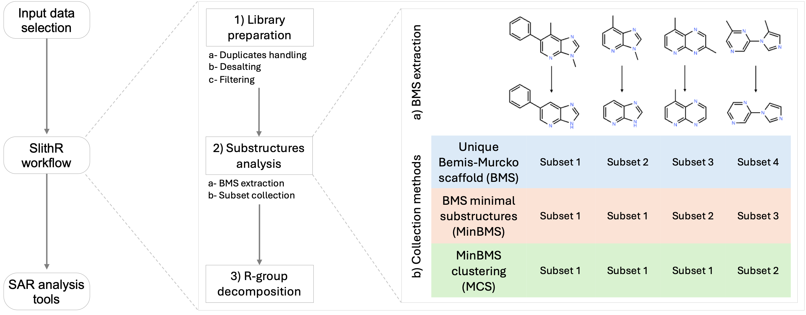

Input Files
SARgate accepts compound libraries either as a local file in one of the supported formats (SDF, CSV, TSV, XLSX, TXT, SMI) or as an automatically compiled SDF library retrieved from online repositories, specifically ChEMBL and/or PubChem.
SARgate supports multiple local input file formats for chemical compound libraries. Regardless of the original format, all input data are internally converted to the SDF format during the analysis workflow. The SDF format therefore represents the internal reference format used by SARgate.
The TXT and SMI formats support structural analysis only, as they cannot store metadata related to biological activity.
To process a local library, select Create from Local in the File Selection panel. To retrieve compounds from online repositories, select Create from Database.
SDF Format
The Structure Data File (SDF) is the native and preferred format for SARgate analyses.
An SDF file stores molecular structures together with associated properties (metadata)
for each molecule.
How an SDF File is Structured
An SDF file contains molecular records, each composed of:
- Title line (molecule name)
- MOL block (atom coordinates + bond table)
- Property block (metadata as key–value pairs)
- Record separator:
$$$$
Each record follows this anatomy:
- First line = Title (molecule name or identifier)
- MOL format header inside MOL block:
V2000orV3000
- Atom block:
- Contains 3D coordinates, or
0 0 0if 2D/no 3D data
- Contains 3D coordinates, or
- Bond block:
- Connectivity table (bond index pairs)
M END→ closes MOL block- Property declaration:
> <PropertyName>followed by value on next line(s)
$$$$→ closes record and starts a new one
Aspirin (acetylsalicylic acid) - Example SDF record with explanatory properties:
Aspirin
SARgate Manual Example
21 21 0 0 0 0 0 0 0 0999 V2000
1.2040 -0.6980 0.0000 C
2.0080 -0.2320 0.0000 C
2.0080 0.6980 0.0000 C
1.2040 1.1630 0.0000 C
0.4010 0.6980 0.0000 C
0.4010 -0.2320 0.0000 C
2.8120 -0.6980 0.0000 C
3.6160 -0.2320 0.0000 C
3.6160 0.6980 0.0000 C
2.8120 1.1630 0.0000 C
4.4200 -0.6980 0.0000 O
5.2230 -0.2320 0.0000 C
5.2230 0.6980 0.0000 O
4.4200 1.1630 0.0000 C
3.6160 1.6280 0.0000 O
2.0080 1.6280 0.0000 O
0.4010 1.6280 0.0000 C
0.4010 2.5580 0.0000 O
0.4010 0.0000 0.0000 O
1.2040 -1.6280 0.0000 O
0.4010 -1.1630 0.0000 C
M END
> <Molecular Weight>
180.16 g/mol
> <pKa>
3.5
> <Solubility>
37 mg/mL
$$$$
Biological Activity in SDF Files
In SARgate, biological activity in SDF files must be specified in a property named exactly:
<Activity>
The activity value must follow a four-element format:
<Type> <Relation> <Value> <Units>
Where:
- Type is the activity type (e.g. IC50, EC50, Inhibition, DockingScore).
- Relation is one of: =, <, <=, >=, >.
- Value is a numeric value.
- Units is the measurement unit.
Valid examples:
<Activity> IC50 = 89.45 nM
<Activity> DockingScore = 89.45 kcal/mol
<Activity> Inhibition = 75 %
This format allows SARgate to correctly parse activity type, quantitative value, inequality relations, and measurement units.
Tabular Formats (CSV, TSV, XLSX)
When using tabular input formats, each row represents a molecule.
The mandatory element required to translate a row into a molecule is a
SMILES string, which must be provided in a dedicated column.
When a tabular file is loaded, SARgate opens a GUI dialog that allows the user to select:
- the column containing SMILES strings.
- optional identifier columns (e.g. molecule name, pubchem_cid, chembl_id).
- one or more activity-related columns.
Biological Activity in Tabular Files
SARgate supports two alternative modes for specifying biological activity in tabular files.
ChEMBL-style Mode
In ChEMBL-style mode, biological activity is defined using four separate columns, following the same structure used in SDF files.
The required column names are:
Standard Type Standard Relation Standard Value Standard Units
This format mirrors the structure of CSV and TSV files downloaded directly from the ChEMBL database, allowing SARgate to process ChEMBL datasets without prior modification.
Single-column Mode
In single-column mode, biological activity is defined using the column header as the activity type (e.g. IC50, Kd, Inhibition) and a numeric value in each cell.
- inequality relations (<, >, <=, >=) are not supported.
- units are assigned automatically based on the activity type.
Automatic unit assignment is performed according to predefined activity-type lists embedded in the SARgate codebase.
Examples:
EC50 = 10 nM Inhibition = 45 % pIC50 = 8.24
Predefined Activity Type Lists
The following predefined activity lists are derived from common ChEMBL records.
nM activity types (unit = nM)
IC50, EC50, GI50, AC50, DC50, CC50, LD50, ED50, ID50, k, Ka, Kd, Km, Ki
SARgate automatically converts units in nM. For example, if the input value is given in µM, it is multiplied by 1,000 to convert it to nM.
Dimensionless activity types (unit = none)
pIC50, pEC50, pGI50, pAC50, pDC50, pCC50, pLD50, pED50, pID50, pK, pKa, pKi, pKd, pKm
Dimensionless activity types in SARgate represent the negative base-10 logarithm of the corresponding activity values expressed in molar units, following the standard p-notation used in medicinal chemistry (for example, pIC50 = −log₁₀(IC50 in M)).
Percent activity types (unit = %)
Inhibition, Activity, ResidualActivity, %Control, %ofcontrol, %Ctrl, Fluintensity
µg/mL activity types (unit = µg/mL)
MIC, MEC, MMC, MBC
µM/min activity types (unit = µM/min)
Vmax
These lists cover the most common activity types found in ChEMBL records.
For custom or uncommon activity types, the ChEMBL-style mode
is strongly recommended, as it allows explicit definition of activity type,
relation, value, and measurement unit.
Create from Database
When Create from Database is selected, SARgate builds an SDF library by querying online compound repositories and collecting all molecules tested against a specific biological target.
The target of interest must be provided using one of the following:
- ChEMBL Target ID: Returns compounds tested against the selected target. This ID is used for compound retrieval from ChEMBL and can also be mapped to corresponding records in PubChem.
- UniProt Accession ID: Searches PubChem only, returning compounds tested against the UniProt-defined protein. This mode does not query ChEMBL.
Technical note: Database retrieval requires Internet connectivity and may fail due to external API availability, database downtime, or network issues. The generated SDF library is saved into SARgate’s default input directory and passed to the next stages of the LMM workflow.
Settings
In the Settings window of the Input tab, the user defines all parameters controlling the analysis of the compound library selected in the file selection panel.
The Settings window is organised into two main sections: Library Preparation and Substructure Analysis. Each section includes multiple subsections dedicated to specific preprocessing and analysis steps.
Library Preparation
The Library Preparation section controls the preprocessing of the input library, including the handling of duplicate compounds and the application of filtering criteria based on structure, activity, target, and assay metadata.
Duplicates Handling
Chemical libraries may contain the same compound multiple times, often associated with different biological activity values. In this subsection, the user can select one of four strategies for handling duplicate entries.
-
Keep one entry with multiple activities
A single representative molecule is retained for each group of duplicates. All associated activity values are preserved and can be inspected individually, each with its corresponding target and assay metadata. -
Keep one entry with the best activity
A single representative molecule is retained for each group of duplicates. For each activity type, only the best activity value is kept. -
Keep one entry with average activities
A single representative molecule is retained for each group of duplicates. Activity values are averaged across all duplicate entries for each activity type. -
Keep duplicates separated
All duplicate entries are retained as separate records, each preserving its original activity, target, and assay information.
Structure Similarity Filter
This subsection allows the user to filter the selected library based on structural similarity to a query structure. The query can be defined using a SMILES, SMARTS, InChI, or MolBlock representation.
Structural similarity is computed using the Tanimoto similarity index calculated on Morgan fingerprints of the query structure and library molecules.
The user can choose one of the following options:
-
No filters
No structure-based similarity filtering is applied. -
Filter by exact structure similarity
The query structure is used exactly as defined, taking into account atom types and connectivity. -
Filter by generalized structure similarity
Only molecular connectivity is considered. Both the query structure and the library molecules are converted to a generalized topological representation, ignoring atom types. For example, a benzene ring and a pyridine ring would be considered 100% similar.
Target Filter
The Target Filter allows the user to specify up to two molecular targets. Only molecules containing a target metadata field exactly matching one or the other of the specified targets are retained.
Activity Filter
The Activity Filter allows the user to specify up to two biological activity types. Only molecules containing an activity metadata field whose type exactly matches one or the other of the specified activity types are retained.
An additional option, Enable ambiguous activities, can be activated
to retain activity values associated with inequality relations different from
the equality operator (=), such as
<, <=, >=, or >.
Assay Filter
The Assay Filter allows the user to specify up to two biological assay types. Only molecules containing assay metadata exactly matching one or the other of the specified assay types are retained.
This filter is primarily intended for libraries downloaded from ChEMBL. In SARgate, biological activity types are derived according to internal rules that combine assay metadata, including:
-
assay_type, defined by a single-letter code:
B= binding (affinity or direct interaction),F= functional (biological effect or modulation),A= ADME-related (pharmacokinetic proxies),T= toxicity (safety or cytotoxicity),P= physicochemical (compound properties),U= unknown (not classified or not mappable). - BAO_label, for example single protein format or cell-based format
How assay classifications are derived in SARgate
Assay classification is determined by combining BAO_label and assay_type.
| B | F | A | T | P | U | |
|---|---|---|---|---|---|---|
| single protein format | in vitro biochemical (binding) | in vitro biochemical (functional) | in vitro biochemical (other) | in vitro biochemical (other) | in vitro biochemical (other) | in vitro biochemical (other) |
| protein complex format | in vitro biochemical (other) | in vitro biochemical (other) | in vitro biochemical (other) | in vitro biochemical (other) | in vitro biochemical (other) | in vitro biochemical (other) |
| protein-substrate format | in vitro biochemical (other) | in vitro biochemical (other) | in vitro biochemical (other) | in vitro biochemical (other) | in vitro biochemical (other) | in vitro biochemical (other) |
| membrane format | in vitro biochemical (other) | in vitro biochemical (other) | in vitro biochemical (other) | in vitro biochemical (other) | in vitro biochemical (other) | in vitro biochemical (other) |
| cell-free format | in vitro biochemical (other) | in vitro biochemical (other) | in vitro biochemical (other) | in vitro biochemical (other) | in vitro biochemical (other) | in vitro biochemical (other) |
| biochemical format | in vitro biochemical (other) | in vitro biochemical (other) | in vitro biochemical (other) | in vitro biochemical (other) | in vitro biochemical (other) | in vitro biochemical (other) |
| cell-based format | in vitro cellular (binding) | in vitro cellular (functional) | in vitro cellular (ADME) | in vitro cellular (toxicity) | in vitro cellular (other) | in vitro cellular (other) |
| phenotypic format | in vitro cellular (phenotypic) | in vitro cellular (phenotypic) | in vitro cellular (phenotypic) | in vitro cellular (phenotypic) | in vitro cellular (phenotypic) | in vitro cellular (phenotypic) |
| subcellular format | in vitro (subcellular) | in vitro (subcellular) | in vitro (subcellular) | in vitro (subcellular) | in vitro (subcellular) | in vitro (subcellular) |
| tissue format | in vitro (tissue) | in vitro (tissue) | in vitro (tissue) | in vitro (tissue) | in vitro (tissue) | in vitro (tissue) |
| tissue homogenate format | in vitro (tissue) | in vitro (tissue) | in vitro (tissue) | in vitro (tissue) | in vitro (tissue) | in vitro (tissue) |
| organism-based format | in vivo (binding) | in vivo (functional) | in vivo (ADME) | in vivo (toxicity) | in vivo (other) | in vivo (other) |
| whole organism format | in vivo (binding) | in vivo (functional) | in vivo (ADME) | in vivo (toxicity) | in vivo (other) | in vivo (other) |
| non-mammalian organism format | in vivo (non-mammalian) | in vivo (non-mammalian) | in vivo (non-mammalian) | in vivo (non-mammalian) | in vivo (non-mammalian) | in vivo (non-mammalian) |
| biophysical format | Biophysical | Biophysical | Biophysical | Biophysical | Biophysical | Biophysical |
| assay format | Binding (unspecified) | Functional (unspecified) | ADME (unspecified) | Toxicity (unspecified) | Physicochemical (unspecified) | Unknown |
Substructure Analysis
The Substructure Analysis section controls how the prepared library is partitioned into subsets of molecules sharing a common substructure.
Subset Collection
Subset collection defines the algorithm used to identify common substructures and to group molecules into subsets. SARgate provides four different subset collection methods (also called workflows).
-
Unique Bemis-Murcko scaffolds (BMS)
Each subset contains molecules sharing the same Bemis-Murcko scaffold. A parameter called Heavy atoms threshold defines light scaffolds (heavy atom count < threshold). The option Populate light substructures with unassigned molecules only applies a priority-based population rule: molecules are first associated with heavy scaffolds (heavy atom count ≥ threshold), and light scaffolds are then populated only with molecules that did not match any heavy scaffold. This reduces redundant, low-specificity subsets that can arise from small scaffolds capturing large fractions of the dataset. -
BMS minimal substructures (MinBMS)
After extracting the Bemis-Murcko scaffold from each molecule, all scaffold pairs are compared to detect substructure containment relationships. When containment is confirmed, the smaller scaffold is retained as the minimal substructure. The parameter Heavy atoms threshold has an additional role here: it not only defines light scaffolds, but also sets the minimum heavy atom count required for a scaffold to be considered a minimal substructure candidate. Furthermore, this threshold determines whether a retained scaffold should be treated as structurally minimal during subset construction. -
MinBMS clustering (MSC)
The user defines a Similarity threshold expressed as a percentage. After scaffold extraction and minimal substructures identification, scaffolds are clustered based on Tanimoto similarity (calculated on Morgan fingerprints). For each cluster, the Maximum Common Structure (MCS) is calculated and used as the representative substructure. -
User-defined scaffold
The user defines a scaffold using a SMILES, SMARTS, InChI, or MolBlock representation. A single subset is created containing all molecules in the prepared library that contain exactly the specified query structure.

The first three workflows are progressive: the second workflow builds upon the first, and the third builds upon both the first and second workflows. While this progressive refinement can improve generalisation, it may also lead to excessive abstraction, potentially resulting in very small common substructures associated with large R-groups and reduced positional information.
Two additional subset collection methods are based on the concept of generalized scaffold.
-
User-defined generalized scaffold
The user provide a custom scaffold (by SMILES, SMARTS, InChI or MolBlock). It will be generalized by converting all atoms to carbons and all bonds to single. Then extract the Murcko scaffold of each molecule in the library and retain only the molecules whose generalized Murcko scaffold contains the user-defined one (comparing the two generalized scaffolds). Then continue as with the Unique Bemis-Murcko scaffolds (BMS) method. -
User-defined generalized scaffold + similarity
Same logic of the previous method, but with an additional step: the molecules whose generalized Murcko scaffold does not contain the user-defined one (also generalized), will be retained if they have a similarity to it above a defined threshold, set by the user, named Scaffold Similarity threshold (set to 85% by default).